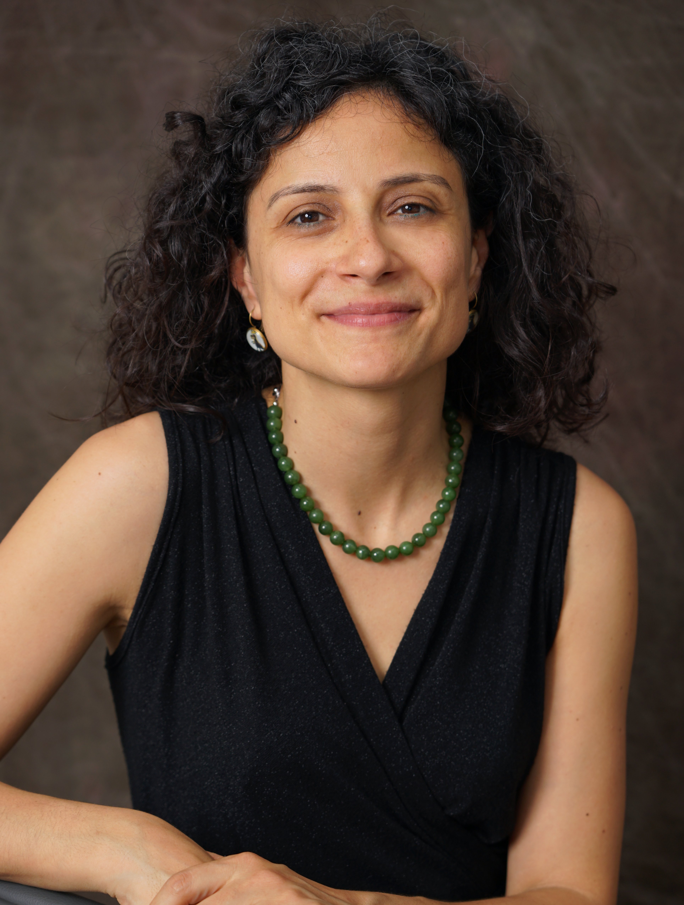
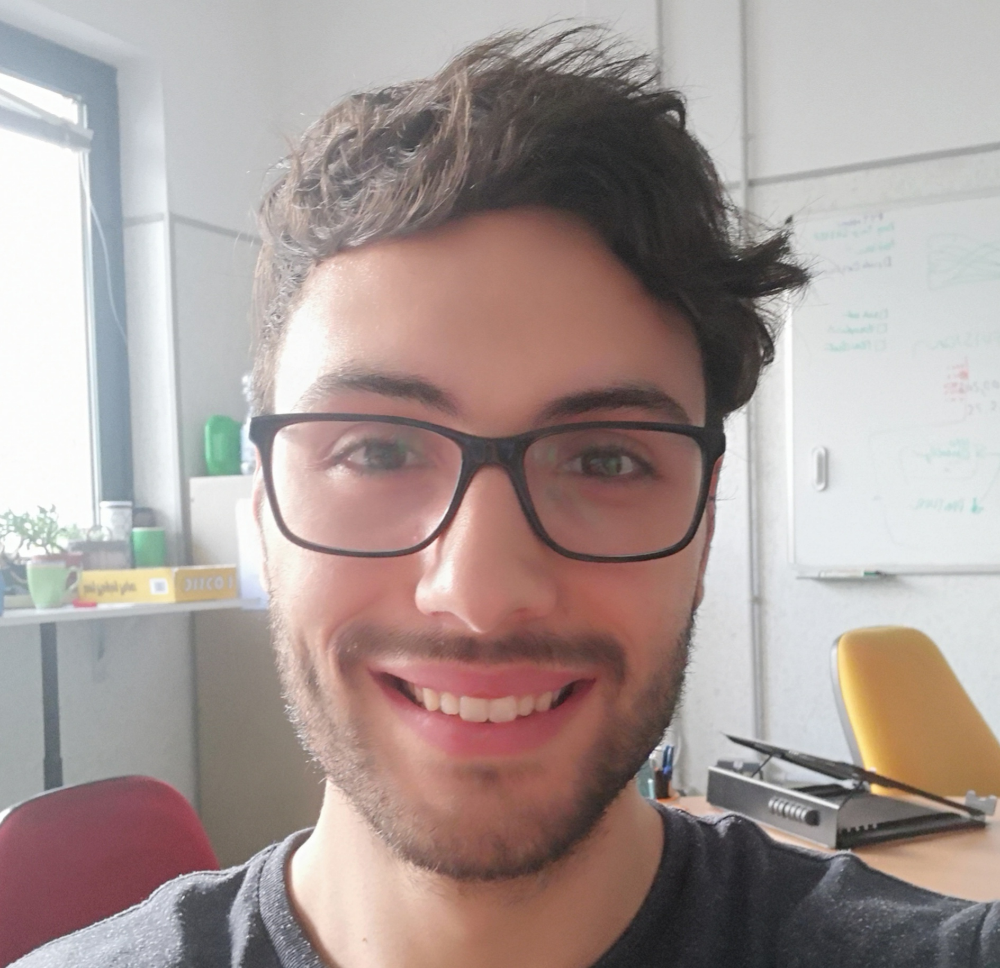

People
Vincenza Colonna
 I am a researcher at the Institue of Genetics and Biophysics of the Italian National Research Council. I graduated in Evolutionary Biology from University of Napoli Federico II (Italy), did postdoctoral work at University of Ferrara (Italy) and at the Wellcome Trust Sanger Institute (UK). I was lectures in Genetics and Bioinformatics at the University of Ferrara (Italy). See my full C.V. here.
I am a population geneticist and an expert in bioinformatics, working mainly with human data.
I led research projects on: analysis of genomic sequences (assembly, variant calling) and genomic inference (functional interpretation of genetic variants);population genetic analyses for inference on demography and natural selection; genetics of isolated populations; evolutionary medicine; genetics of rare genomic variants.
I have actively collaborated on projects involving RNAseq data analysis and general statistical inference. During my undergraduate training, I worked on projects on molecular biology.
I am an experienced trainer in teaching basic lab skills for research computing (e.g. programming languages, version control, statistical analyses).
I founded and led OBiLab, a project on training in Bioinformatics
Silvia Buonaiuto, PhD student
 I am a Phd Student at National Research Council and Università della Campania Luigi Vanvitelli. I work on a project that studies idiopathic recurrent miscarriage and aims at identifying genetic variants likely to cause miscarriages to ultimately improve prenatal diagnosis.
I am a Phd Student at National Research Council and Università della Campania Luigi Vanvitelli. I work on a project that studies idiopathic recurrent miscarriage and aims at identifying genetic variants likely to cause miscarriages to ultimately improve prenatal diagnosis.
I have a master’s degree in Biology from the University of Napoli Federico II. I did a master thesis in molecular biology at the Department of Biology.
Gianluca Damaggio, Master Student
 I received a bachelor’s degree in Molecular Biology at the University of Napoli Federico II (Italy) and now I am a master’s student at the Institue of Genetics and Biophysics of the Italian National Research Council.
My project consists in the analysis of embryonic whole-genome sequences from recurrent miscarriages in humans. My interest is to investigate the enrichment of deleterious consequences in our cases compared to a control population. To do this I study the distribution of deleterious variants in the Allele Frequency Spectrum.
I am also collaborating to project with the Laboratory of Elena Cattaneo in Milano. My contribution is to set up a pipeline to count the number of repeats in the Huntington’s gene.
Flavia Villani, Master Student
I am a master’s student at the Institue of Genetics and Biophysics of the Italian National Research Council. I graduated in Biology at the University of Fisciano (Italy).
I contributed to a project that studies idiopathic recurrent miscarriage. Currently, I am working to build a library using the Python programming language for the statistical analysis of negative selection using sequence data. In particular, I am focusing on the use of pangenomic sequence data.
Giuliana D’Angelo, Master Student
I am a molecular biology student at University of Naples Federico II currently working on my master’s degree thesis at the Institue of Genetics and Biophysics of the Italian National Research Council.
For my thesis, I am studying embryonic mitochondrial sequences from recurrent miscarriages in humans. In particular, I am doing the variant calling, determining haplogroups, and studying the incidence of deleterious mutations in mitochondrial genes and regulatory regions.
Former members
-
Roberto Sirica, PhD student, 2015-2018
-
Gaia Leandra Cecere, undergraduate student, 2018
-
Marianna Buonaiuto, visiting Postdoc, 2017
-
Lucia De Martino, visiting Graduate Student, 2016